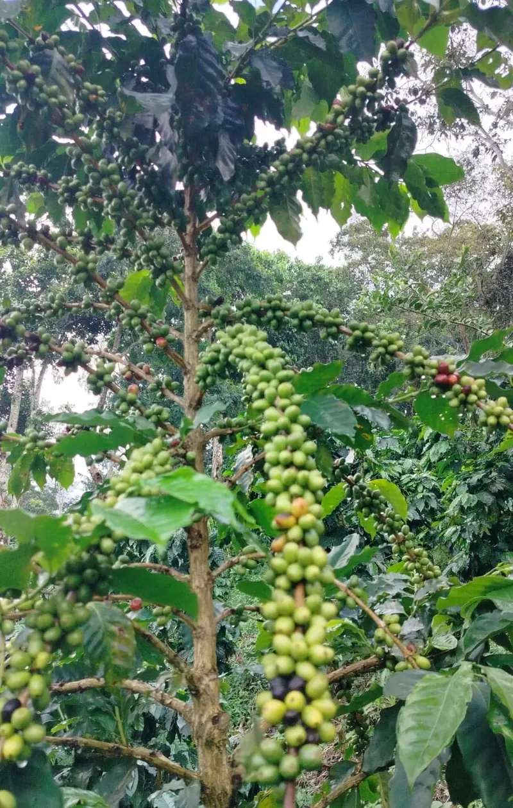
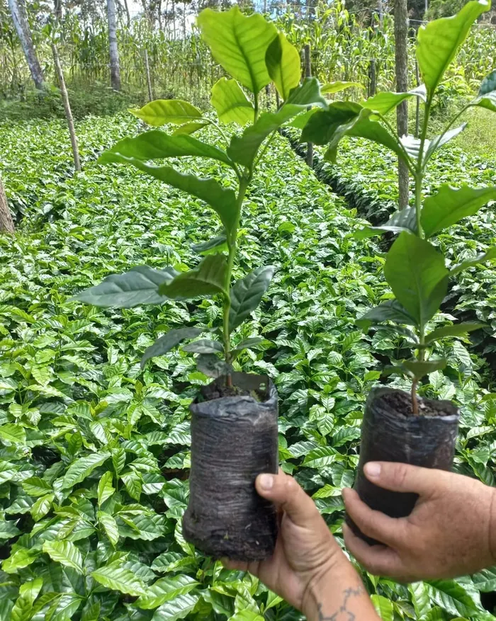
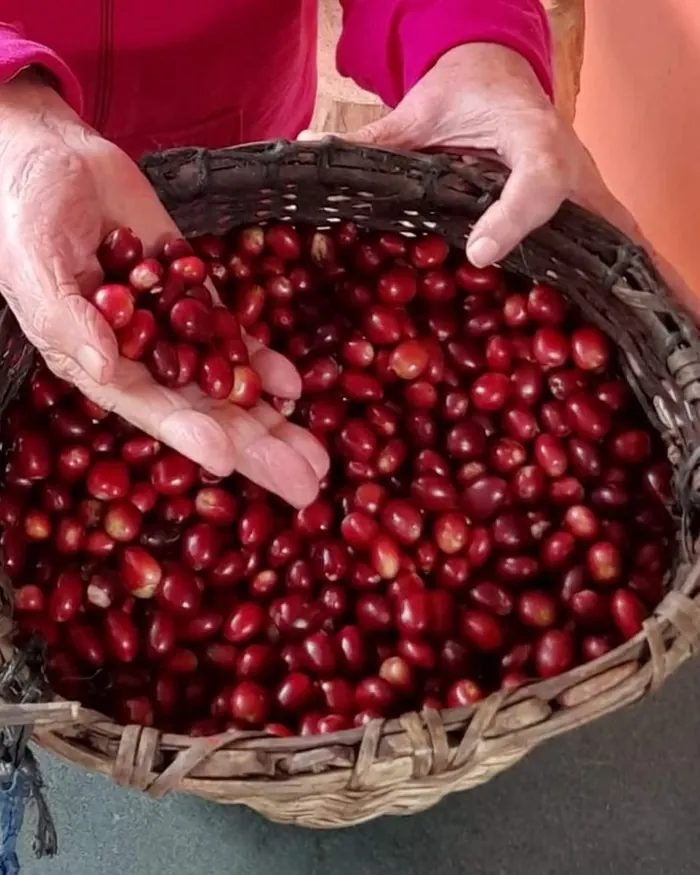
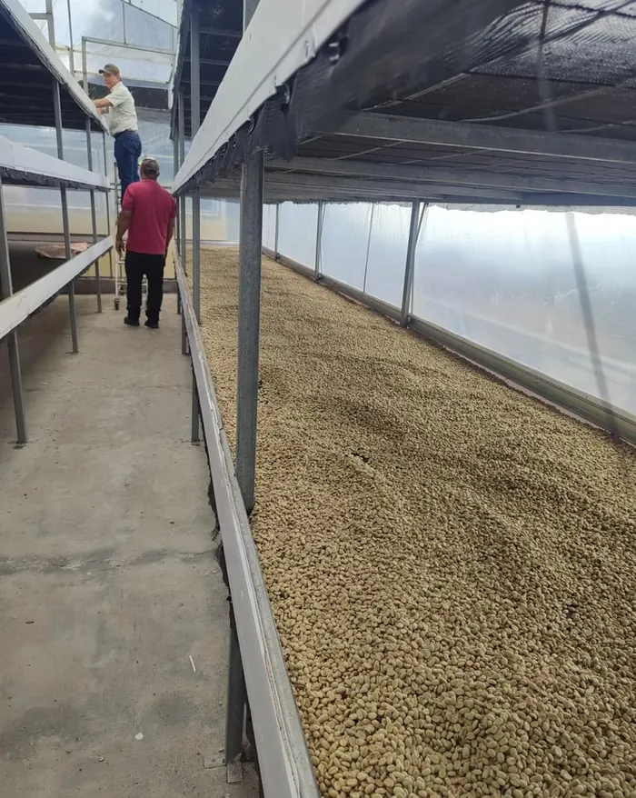
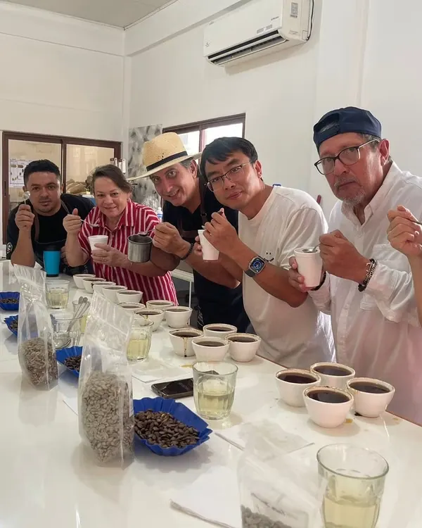
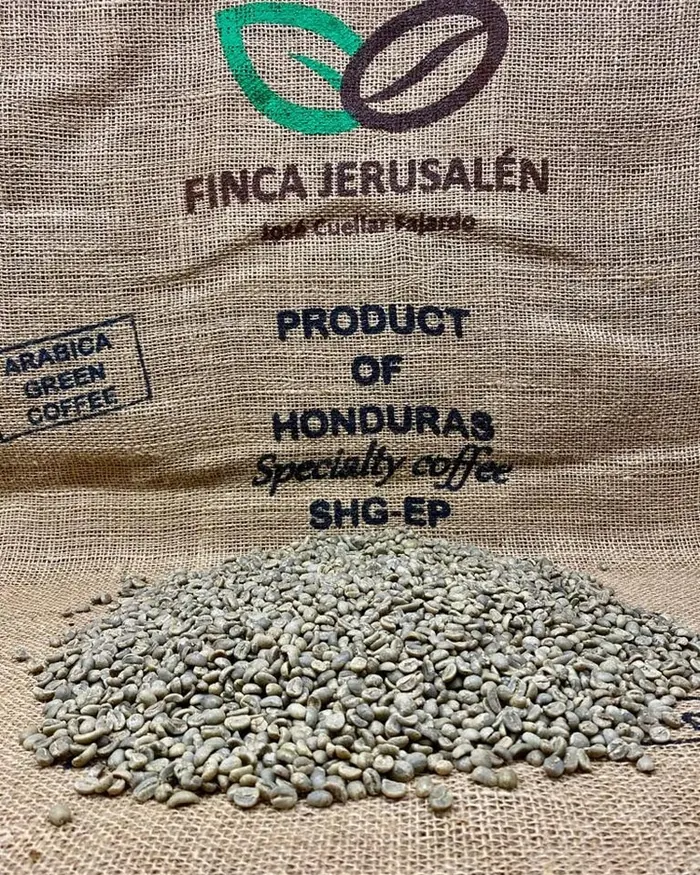
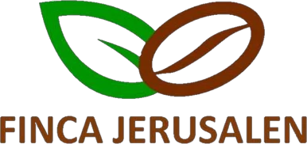

Nuestros cafés
Origen
Producidos en las montañas de Trinidad y municipios vecinos de Santa Bárbara. Altitudes elevadas, bosques nublados, brisas frescas y humedad constante favorecen una maduración lenta y uniforme, con mayor densidad, dulzor y complejidad.

Variedades
Destaca Parainema, nuestro referente. También Pacamara, Catuaí, Lempira, IHCAFE 90, Anacafé 14, Obata y Geisha.
Procesos de producción y beneficio
Producimos cafés especiales convencionales y certificados con procesos lavados, melados y naturales, bajo la marca Finca Jerusalén.
Natural
Cuerpo intenso, alta dulzura y acidez. Notas frutales intensas, avinadas.
Honey
Acidez cítrica marcada, mayor claridad de notas y complejidad aromática.
Lavado
Cafés limpios y balanceados, con base a chocolate y fondo cítrico.
Perfil de nuestros cafés: notas florales, frutales, a chocolate y azúcar morena; cuerpo medio, acidez brillante y delicada, y sabores complejos de frutas tropicales y especias marrones.
Del cafetal a la taza





Tostaduría
Trilla, tueste, molienda y envasado de café.
Nuestra marca y nuestra finca

Conozca nuestra finca en fincajerusalen.com.
Finca Jerusalén nace de la pasión por el café y la tradición familiar. Cultiva café en las montañas de El Cidral (Trinidad, Santa Bárbara) desde hace cuatro generaciones. Su embajador de marca es José Francisco Cuellar Fajardo.
Adopción de plantas
Programa iniciado en 2020. Tostadores y consumidores patrocinan la siembra y el manejo de plantas de café. Mejora y mantiene el cafetal y genera empleo en la zona.